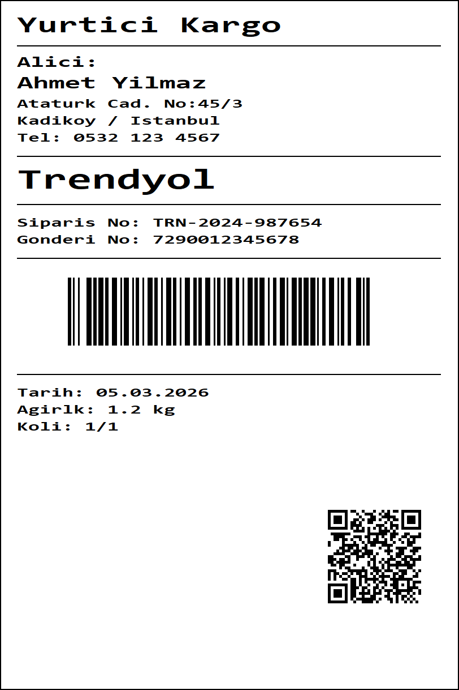
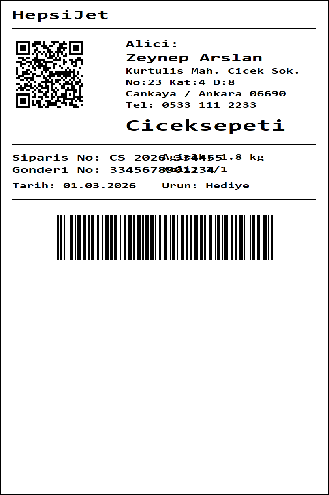
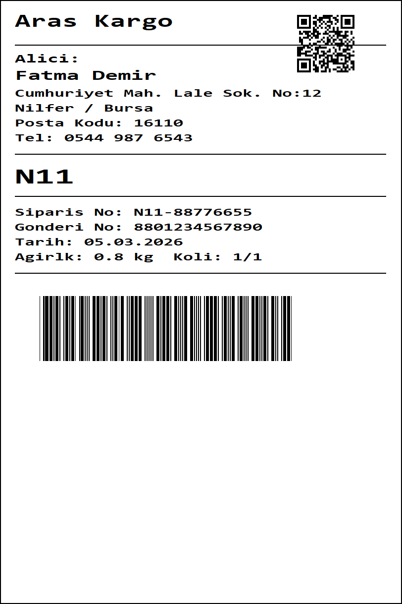
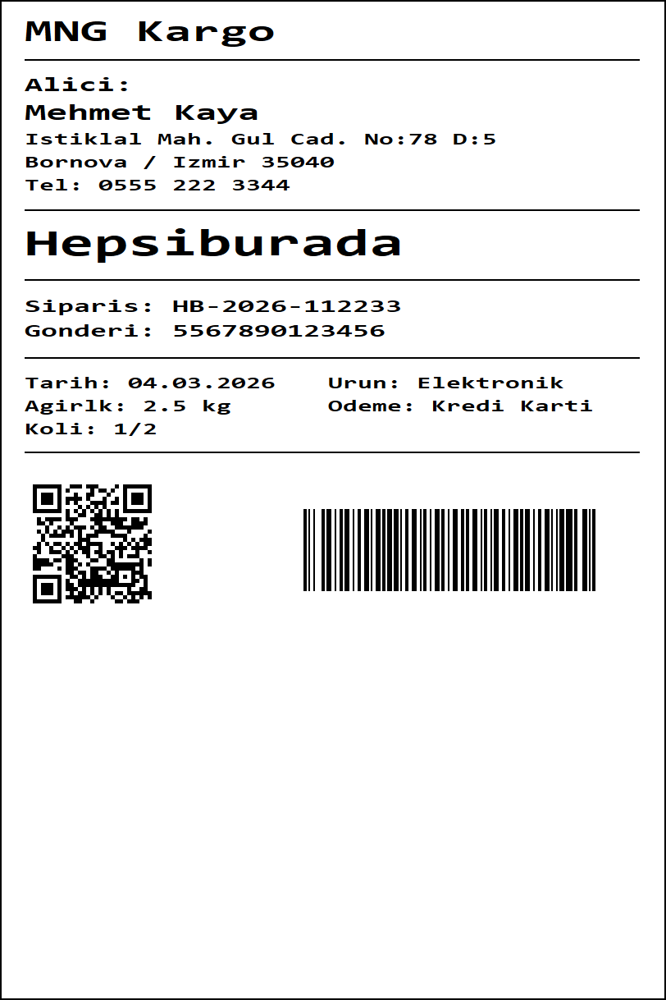
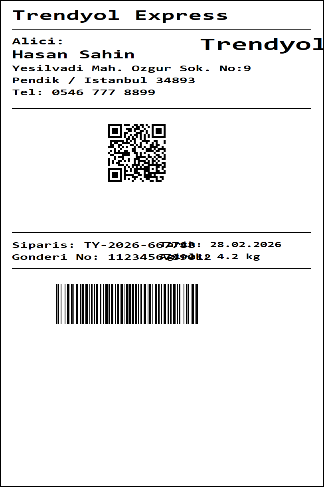
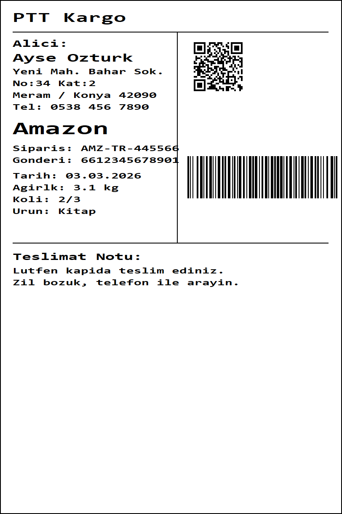
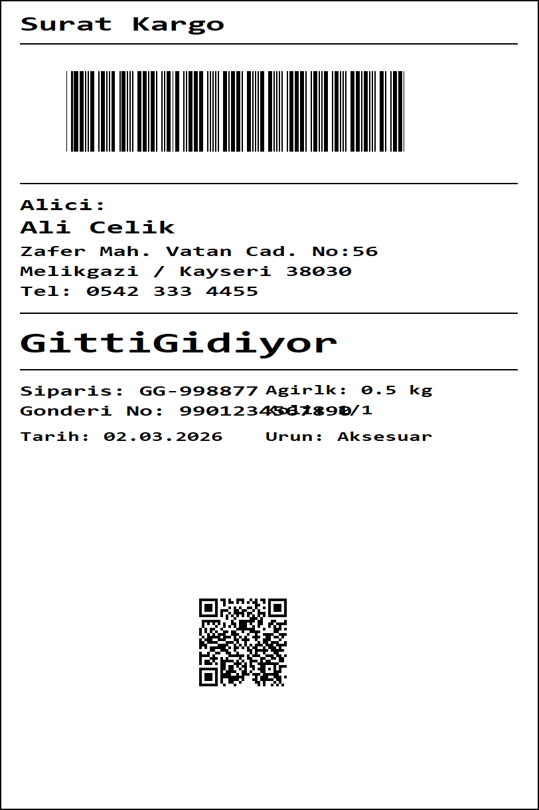
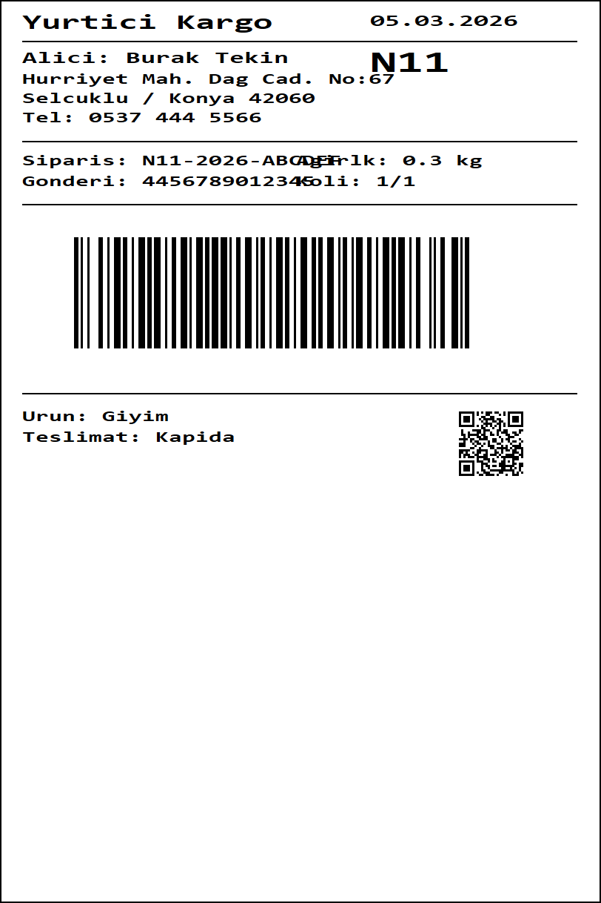

Python ve PyQt6 ile gelistirilmis, ZPL (Zebra Programming Language) kodunu gorsel olarak duzenleyebilen tam ozellikli 2D etiket tasarim editoru.
Etiket tasarimindan goruntu analizine, toplu islemeden kod duzenleyiciye kadar her sey tek bir uygulamada.
Surekle-birak arayuzu ile etiket elemanlarini gorsel olarak duzenleyin. Her degisiklik aninda ZPL koduna yansir.
Kod degisiklikleri aninda canvasa, canvas degisiklikleri aninda koda yansir. 500ms debounce ile akici deneyim.
Etiket gorselini iceri aktarin, barkod/QR/metin/cizgi bolgeleri otomatik tespit edilsin, ZPL koduna donusturulsun.
RapidOCR, EasyOCR veya Tesseract arasinda secim yapin. Auto modunda mevcut tum motorlar kullanilir.
Birden fazla etiket gorseli secin, hepsini tek seferde analiz edip ZPL dosyalari olarak kaydedin.
Labelary API'ye gerek kalmadan ZPL etiketlerini yerel olarak Qt ile render edin.
ZPL dosyasi ac/kaydet, PNG/PDF olarak disari aktar, panoya yapistir.
VS Code esintili koyu tema ve goz yormayan acik tema secenegi.
Uc panelli ana ekran: sol tarafta etiket listesi, ortada ZPL kod editoru, sagda gorsel canvas.
Etiket gorselini analiz edin, bolgeleri gorun, ZPL kodu uretin veya toplu isleme baslatin.
8 farkli duzende (A-H), farkli kargo firmalari ve satis kanallari ile uretilmis test etiketleri.








Adim adim uygulamayi nasil kullanacaginizi ogrenin.
Sol paneldeki Import butonuna tiklayarak veya Ctrl+I kisayolu ile etiket gorsellerini (PNG, JPG, BMP) secin. Birden fazla dosya secebilirsiniz.
Sol paneldeki listeden analiz etmek istediginiz etikete tiklayin. Gorsel alt panelde Image Analysis sekmesinde gosterilir.
Ust barda bulunan OCR Engine acilir menusunden kullanmak istediginiz motoru secin. Kurulu olmayan motorlar gri renkte gosterilir.
Analyze Image butonuna tiklayin. Sistem barkod, QR kod, metin, cizgi ve gorsel bolgelerini otomatik tespit eder. Renkli kutucuklar ile sonuclari gorun.
Generate ZPL from Image butonuna tiklayin. Tespit edilen bolgeler yapisal ZPL koduna donusturulur ve kod editorunde gosterilir. Canvas'ta onizleme yapabilirsiniz.
Ctrl+S ile ZPL kodunu kaydedin veya File > Export PNG ile gorsel olarak disari aktarin.
Image Analysis sekmesindeki yesil Batch Process... butonuna tiklayin.
Acilan dosya iletisim kutusundan donusturmek istediginiz tum etiket gorsellerini secin. Birden fazla dosya secebilirsiniz.
ZPL dosyalarinin kaydedilecegi klasoru secin. Her gorsel icin ayri bir .zpl dosyasi olusturulur.
Ilerleme cubugu ile islemi takip edin. Iptal etmek isterseniz Cancel butonuna tiklayin. Sonucta basarili/basarisiz raporu gosterilir.
Tum temel ve gelismis ZPL komutlari desteklenir.
| Kategori | Komutlar | Aciklama |
|---|---|---|
| Temel | ^XA ^XZ ^FO ^FT ^FD ^FS ^A ^CF ^CI |
Etiket baslangic/bitis, konum, metin, font ayarlari |
| Sekiller | ^GB ^GC ^GD |
Dikdortgen, cizgi, daire, capraz cizgi |
| Barkod | ^BC ^B3 ^BE ^BY ^BQ |
Code 128, Code 39, EAN-13, barkod ayarlari, QR kod |
| Grafik | ^GFA ^FR |
Bitmap grafik (ASCII), ters renk (beyaz uzerine siyah) |
| Duzen | ^FB ^FW ^PW ^LL ^LH |
Cok satirli metin, yon, genislik, yukseklik, baslangic noktasi |
| Diger | ^FX |
Yorum satiri |
Uygulamayi calistirmanin en kolay yolu -- hicbir manuel kurulum gerektirmez.
run.bat dosyasina cift tiklayin.
Ilk calistirmada otomatik olarak sanal ortam olusturulur, bagimliliklar yuklenir ve uygulama baslatilir. Sonraki calistirmalarda dogrudan acilir.
Ilk calistirmada otomatik olarak sanal ortam olusturulur, bagimliliklar yuklenir ve uygulama baslatilir.
Python kurulumu gerektirmeden dogrudan calistirilabiir Windows uygulamasi.
dist/ZPL_Editor/ klasorundeki ZPL_Editor.exe dosyasini calistirin. Python kurulumu gerektirmez. Klasorun tamami gereklidir (DLL ve veri dosyalari dahil).
Cikti dist/ZPL_Editor/ klasorune olusturulur. EasyOCR'nin PyTorch bagimliligi nedeniyle toplam boyut ~700 MB civarindadir.
Baslangic scriptleri yerine manuel kurulum yapmak isteyenler icin.
| Gereksinim | Aciklama |
|---|---|
| Python 3.10+ | Python yorumlayicisi |
| Tesseract OCR |
Metin tanima motoru. Buradan indirin. Varsayilan yol: C:\Program Files\Tesseract-OCR\tesseract.exeFarkli yola kurduysaniz Edit > Settings menusunden veya Image Analysis sekmesinden degistirebilirsiniz. |
Projede kullanilan Python kutuphaneleri.
| Paket | Amac |
|---|---|
PyQt6 | GUI framework (pencere, canvas, dialog, toolbar) |
numpy | Goruntu isleme icin dizi operasyonlari |
opencv-python | Goruntu analizi, kontur tespiti, on-isleme |
pytesseract | Tesseract OCR Python sarmalayicisi |
rapidocr_onnxruntime | Birincil OCR motoru (pure pip, ~15MB ONNX modeller) |
easyocr | Ikincil OCR motoru (PyTorch tabanli) |
pyzbar | Barkod ve QR kod okuma |
qrcode | QR kod olusturma |
python-barcode | 1D barkod olusturma |
requests | Labelary API (opsiyonel, render icin) |
Hizli erisim icin klavye kisayollari.
| Kisayol | Islem |
|---|---|
| Ctrl+N | Yeni etiket |
| Ctrl+O | ZPL dosyasi ac |
| Ctrl+S | ZPL dosyasi kaydet |
| Ctrl+I | Gorsel iceri aktar |
| Ctrl+Shift+V | Panodan gorsel yapistir |
| Ctrl+Z | Geri al |
| Ctrl+Y | Yinele |
| Ctrl+A | Tumunu sec |
| Ctrl+D | Secili elemani klonla |
| Ctrl+G | Izgaraya yapismayi ac/kapat |
| Ctrl+R | ZPL kodunu yeniden render et |
| Ctrl+= | Yaklas (zoom in) |
| Ctrl+- | Uzaklas (zoom out) |
| Ctrl+0 | Pencereye sigdir |
| Delete | Secili elemani sil |
| Ok tuslari | Secili elemani 1px tasi |
| Shift+Ok tuslari | Secili elemani 10px tasi |
ZPL etiketlerinde kullanilan koordinat sistemi ve birim donusumleri.
Sol ust kose (0, 0). X saga, Y asagiya artar.
Tum koordinatlar dot cinsindendir. 1 dot = yazici DPI'inda 1 piksel.
1 mm = 8 dot
1 inch = 203 dot
812 x 1218 dot
(~102mm x 152mm)
^FO sol ust koseyi, ^FT baseline (sol alt) konumunu belirtir.
Her iki komut da desteklenir ancak konum hesaplamasinda fark vardir.
Kaynak kod organizasyonu.
8 test etiketi uzerinde piksel benzerlik analizi. Hedef: >= %95.
| Etiket | Benzerlik | Sonuc |
|---|---|---|
| gen_label_A (Yurtici / Trendyol) | %97.0 | PASS |
| gen_label_B (Aras / N11) | %97.4 | PASS |
| gen_label_C (Surat / GittiGidiyor) | %97.3 | PASS |
| gen_label_D (MNG / Hepsiburada) | %96.9 | PASS |
| gen_label_E (HepsiJet / Ciceksepeti) | %97.3 | PASS |
| gen_label_F (PTT / Amazon) | %97.0 | PASS |
| gen_label_G (Trendyol Express) | %97.1 | PASS |
| gen_label_H (Yurtici / N11) | %97.9 | PASS |
8/8 test basarili (esik: >= %95.0)